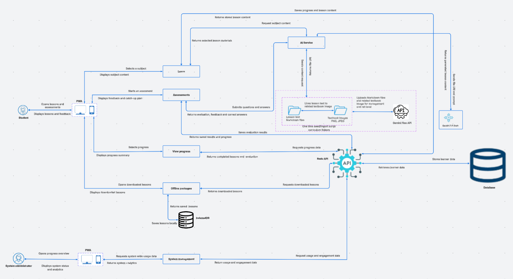

System Architecture
Overview
Redu is a Progressive Web App (PWA) backed by a single, centralized Redu API. There is one PWA for everyone: learners and administrators sign in through the same interface, and role-based access control (RBAC) decides which screens and features each user sees. Redu is web-only; there is no native mobile app.
The Learn and Assessments modules use a shared AI Service, which finds the right curriculum Markdown file, passes its file URI to Gemini 3.8 Flash, and returns content generated from the available files. Only the Redu API reads from or writes to the database.
- Client Application: One PWA (learner and admin share the same sign-in and interface), deployed on Vercel. [Add: frontend framework, e.g. React / Next.js]
- Backend Integration Layer: FastAPI, deployed on Heroku.
- Persistence Layer: PostgreSQL database on Heroku.
- AI Integration & Grounding: Google Gemini 3.8 Flash, grounded on curriculum Markdown files stored in the Gemini Files API.
- Offline Storage: IndexedDB in the learner's browser, which holds downloaded lessons for offline use.
The PWA talks only to the Redu API. Modules never call each other, the AI Service never calls back into a module, and no module reads or writes the database directly.
System Architecture Diagram

System Architecture diagram (Lucidspark): Redu System Architecture Diagram
Application Components
Progressive Web App (PWA)
The single client application, deployed on Vercel. It can be installed on a phone or computer and works offline for downloaded lessons. After sign-in, the PWA shows learner screens or administrator screens depending on the user's role.
- Learner view: select a subject, topic and lesson; read AI-generated lesson content; take diagnostics, practice sets and quizzes; view progress; download lessons for offline use.
- Admin view: system management, usage and engagement analytics.
Redu API (FastAPI)
The central engine of the system, deployed on Heroku. It signs users in, checks their role, routes each request to the right module, validates data and is the only component that talks to PostgreSQL.
Feature Modules
| Module | What it does | Uses the AI Service |
|---|---|---|
| Learn | Lists subjects, topics and lessons, generates lesson content, answers learner questions and records lesson progress. | Yes |
| Assessments | Starts assessments, evaluates answers, gives feedback and a catch-up plan. | Yes |
| View Progress | Shows completed lessons and evaluation results. | No |
| Offline Packages | Prepares downloadable lessons and returns them to the learner's device. | No |
| System Management | Provides system-wide usage and engagement data to the administrator. | No |
AI Service
Shared by the Learn and Assessments modules. It looks through the curriculum Markdown files, extracts the file URI of the right file, sends the URI and a prompt to Gemini 3.8 Flash, and returns the generated content to the module that asked. It never touches the database and never calls a module.
Curriculum Markdown Files and Gemini Files API
Lesson text is stored as Markdown files (with the related textbook images in PNG/JPEG) in a folder in the backend. A one-time seed/import script uploads them to the Gemini Files API, which manages and retrieves them for the AI.
Database (PostgreSQL)
Stores learner data, topics, learning content, assessments, progress, tutor interactions, offline packages and sync events. It is accessed only by the Redu API.
Offline Storage (IndexedDB)
A browser database on the learner's device. Lessons the learner downloads while online are copied here so they can be opened later without internet.
Data Flow
Learning Flow (core flow)
[ Learner selects subject, topic, lesson ]
│
▼
[ PWA ] ──► [ Redu API ] ──► [ Learn module ] ──► [ AI Service ]
│
finds the Markdown file and extracts its file URI
│
▼
[ Gemini 3.8 Flash ]
(file URI + prompt → content generated from the available files)
│
▼
[ Learner sees the lesson ] ◄── [ PWA ] ◄── [ Redu API ] ◄── [ Learn module ]
│
▼
[ Database: progress and content saved ]
Assessment Flow
- The learner starts an assessment. The Assessments module asks the AI Service for questions based on the lesson's Markdown file.
- The learner submits answers. The AI Service evaluates them against the same content and returns the result, feedback, correct answers and a catch-up plan.
- The Redu API saves the evaluation results and progress, and they appear in View Progress.
Curriculum Loading Flow (one-time seed script)
- The team runs a seed/import script once, using the curriculum folders kept in the backend (Markdown lesson files and textbook images).
- The script uploads the files to the Gemini Files API.
- The script saves topics and lessons through the Redu API into the database.
- The same script is run again only when the Markdown files change. Admins do not upload content through the interface.
Offline Flow
[ Learner online ] ──► [ Offline Packages module via Redu API ] ──► [ PWA ]
│
copies lessons into [ IndexedDB ]
│
[ Learner offline ] ◄────── opens saved lessons from IndexedDB ◄─────┘
Administrator Flow
The administrator signs in on the same PWA. The System Management module requests usage and engagement data from the Redu API, which reads it from PostgreSQL and returns system analytics.